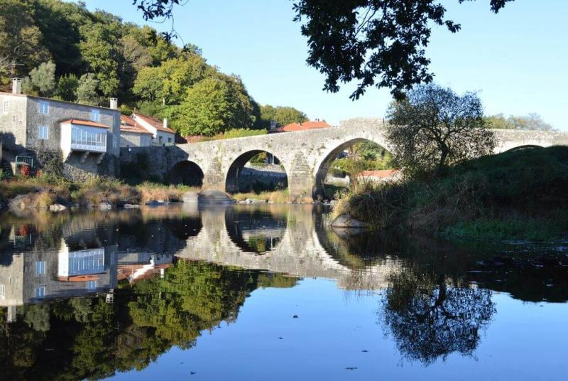

Si disponemos de poco espacio en la web, puede ser interesante mostrar cierta información sólo si el visitante de nuestra web lo desea y debe ser él quien decida mostrar esa información haciendo un simple clic. Ponte Maceira es un pequeño pueblo de poco más de 60 habitantes que está situada en la parroquia de Portor, perteneciente al ayuntamiento de Negreira en la provincia de A Coruña. Por aquí pasa el río Tambre, uno de los más importantes de Galicia
Debemos emplear el contenedor general <details> y dentro de éste usaremos <summary> para indicar con un mensaje apropiado que al hacer clic aqui le aparecerá esa información.
Recordar cerrar ambas etiquetas.
Ejemplo:
Ponte Maceira
Uno de los pueblos más bonitos de España.

Es paso obligado en el Camino marítimo de Santiago uniendo la ciudad del Apóstol Santiago con Fisterra.
Conoce más de este hermoso pueblo haciendo clic aquí Ponte Maceira.